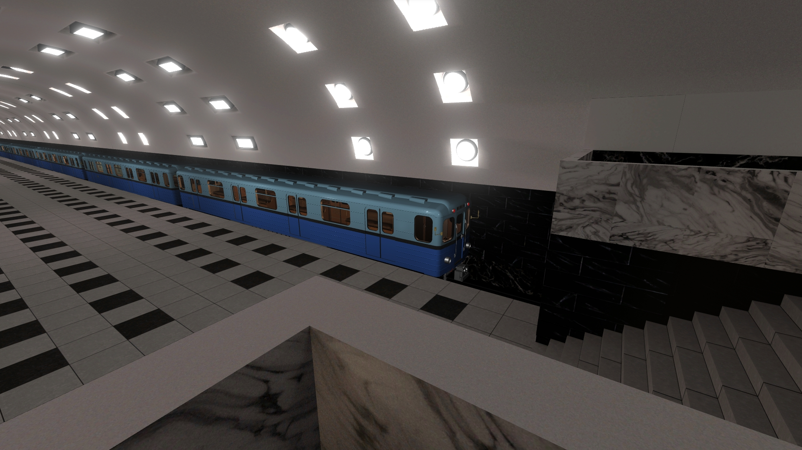
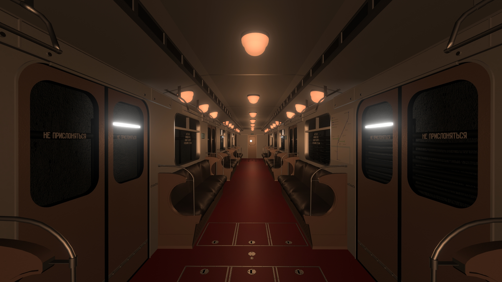

Погрузитесь в атмосферу настоящего русского метро! Научитесь управляйте как старыми поездами с их особенностями, так и с новыми (и даже концептуальными)! Следите за показанияит сигналов светофоров, скоростью, торможением на станциях и в экстренных ситуациях. Игра основана на реальных принципах работы метрополитена с исторической достоверностью, вниманием к деталям и техническим ньюансам.
Скриншоты



Где купить
Купить в SteamКонтакты
По вопросам и предложениям пишите на: vykhinogamesl@gmail.com